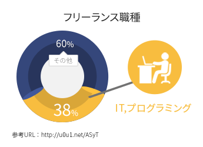

年収 400万円 以上 の エンジニア へ
理想の転職を実現する "実践型プログラミングスクール"
"Webスクとは？"
受講生全員に年収400万円以上の転職を保証する
実践型のプログラミングスクールです
転職できなかった場合は受講料を ”全額返金” いたします
"エンジニアの将来性"
2020年にはプログラミングが義務教育となるなど、今後エンジニアの活躍の場は増えていくと言われています。

実力と給与が比例する
実力主義の業界のため、学習量に応じてそれに見合う給与が得られます。
エンジニアの需要が伸びる
スマホやタブレットの普及により、エンジニアの需要は伸び続けています。今後も安定的な需要があります。

自由な働き方ができる
フリーのエンジニアが年々増えており、IT企業ではフレックスタイムやリモートワークの導入も進んでいます。
"Webスクで
即戦力のエンジニアへ"
実務体験ができる
超実践的なカリキュラム
Webスクは6ヶ月間のカリキュラムです。講義は週１回ですが、いつでも通い放題の学習環境があります。また、最後の１ヶ月は必ず全員開発案件の実務体験を行い、プログラマーとしての実践力を身につけていきます。
・将来性のあるスキルを身につけたい方
・ここで人生を変えたい強い意志のある方
・6ヶ月間、最後までやり遂げられる方
におすすめです。
"まずは無料カウンセリングへ"
所要時間
60分～90分
内容
・毎日勉強できるかわからない
・初心者だけど大丈夫？
・転職先はどうやって選ぶの？
・転職しなくてもよいか
場所
渋谷校
受講生全員に "転職保証" が付いてくる
今始めればきっとあなたの人生が変わる
まずは無料カウンセリングへ"体験授業に参加したあなた"
あなたのプロフィールを、ここから実際にコードの中に記述をしていきましょう。
記述した内容がWebサイトとして反映される楽しさを感じてください。
お名前
| 趣味 | |
| 好きなこと | |
| 一言 |